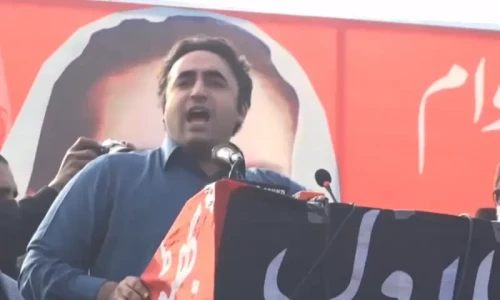

Monday, January 15, 2024|04 Rajab 1445 اردو Monday, January 15, 2024 04 Rajab 1445
Senetor Hikalur Rehman moved resolution on Sunday Bussiness & Economy updated 5 hours ago
The exchange rate and international price of oil have fallen in recent days Sports Updates 2 hours ago
Pakistan are going with an unchanged lineup in the game Pakistan published 6 hours ago
The party was denied the bat symbol by the SC Pakistan published 2 hours ago
Directs parties to submit list of candidates within five days World published 4 hours ago
The demonstarion was planned by Edwin Wagensveld, who has a history of such acts Pakistan Published 3 hours ago
The party has decided to make a database of its candidates and their new symbols 
Recommended
Popular
Fighter's trailer has now been released, movie set for release on Jan 25
Pentagon spokesperson ‘shakes off’ the claims
Hollywood actor married his personal trainer in July 2023
Social media users slam Indian commentator for his anti-Islamic remark
10-day celebration began in Brunei’s capital city on January 7
Telefilm features Saman Ansari, Sajid Hassan, Umar Alam, and Zoya Nasir
'Many other diseases have taken hold of my body, ' says actor
Read more Published 11 hours ago
'Star batsman would probably sit out the final two games as well,' says coach Gary Published 20 minute ago
Despite watching cricket, he did not recognise Australian cricketers when they hop in Updated a day ago
Pakistan are going with an unchanged lineup in the game
Read more Published 8 hours ago
Gold now selling for Rs217,900 per tola Published 6 hours ago
Sales of car models decline across the board Updated 6 hours ago
The greenback shed 13 paisas to settle at Rs280.23
Read more Published 3 minutes ago
Vessel's US-based operator Eagle Bulk Shipping says it was hit by an 'unidentified projectile' Published 2 hours ago
Group is already banned in Bangladesh, Egypt, Germany, Pakistan and several Central Asian and Arab countries Published 2 hours ago
Housing crisis prompts government to reconsider its ambitious pro-immigration programme
Read more
Pakistan will need to prevent 46,700 new infections each year, as per WHO estimates Ehsan Ahmed | Haziq Sidiqi
In the last season, it was seen how Queen Elizabeth bravely sought advice from the then-popular Prime Minister, Tony Blair Shabana Mahfooz
Saddar’s Jahangir Park is the only park powered by solar energy Afifa Anis Syed
The state is estimated to go submerge by 2050 Web Desk
Sales of Apple's latest iPhone 15 series of handsets have been far worse than previous models in China Reuters
The developer says the battery measures less than a coin Web DESK